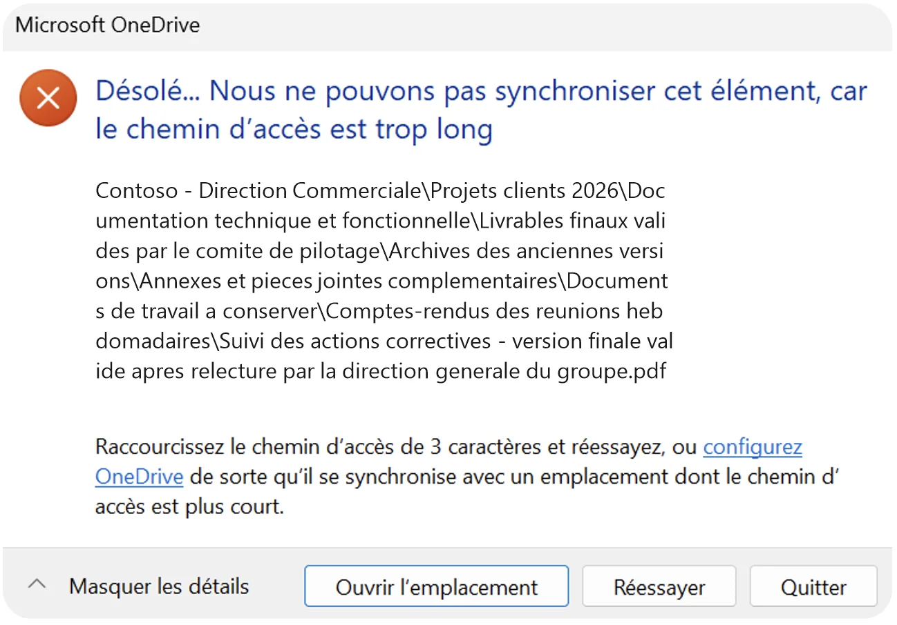

Le message d'erreur
OneDrive affiche une fenêtre « Microsoft OneDrive » avec ce texte :
« Désolé… Nous ne pouvons pas synchroniser cet élément, car le chemin d'accès est trop long. »
Le message indique ensuite de combien de caractères il faut raccourcir le chemin (par exemple « Raccourcissez le chemin d'accès de 3 caractères et réessayez ») et propose de configurer OneDrive pour qu'il se synchronise avec un emplacement dont le chemin d'accès est plus court. Les boutons « Ouvrir l'emplacement », « Réessayer » et « Quitter » sont proposés.

Exemple de message d'erreur OneDrive pour un chemin de plus de 400 caractères.
Pourquoi cette erreur apparaît
Le « chemin » d'un fichier, c'est son nom plus tous les dossiers qui le contiennent. Au-delà de 400 caractères, OneDrive ne peut pas synchroniser le fichier : il reste bloqué sur cette erreur tant que le chemin n'a pas été raccourci.
Les causes les plus fréquentes :
- des dossiers imbriqués sur de nombreux niveaux ;
- des noms de dossiers ou de fichiers très longs : titres complets, dates, mentions « version finale », nom du projet répété à chaque niveau ;
- des fichiers venant d'un ancien serveur de fichiers, où ces chemins ne posaient pas de problème.
Comment corriger l'erreur
- Notez le nombre de caractères à retirer indiqué par OneDrive.
- Cliquez sur « Ouvrir l'emplacement » pour afficher le fichier concerné.
- Raccourcissez le nom du fichier ou celui de ses dossiers parents : supprimez les répétitions, les dates et les mentions inutiles.
- Si nécessaire, remontez le dossier plus près de la racine de votre OneDrive.
- Cliquez sur « Réessayer » : la synchronisation reprend.